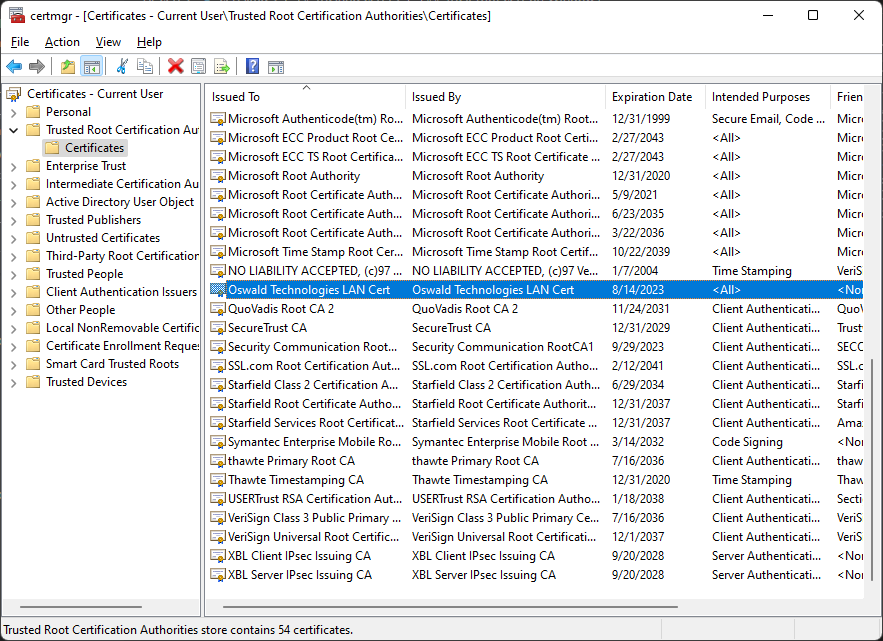
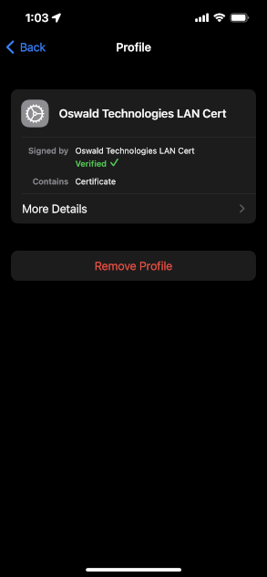
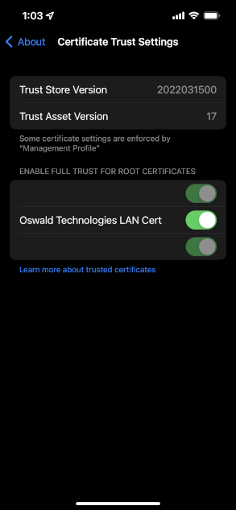
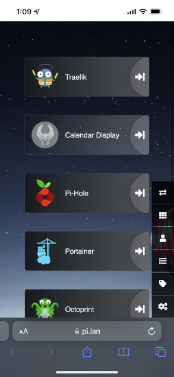
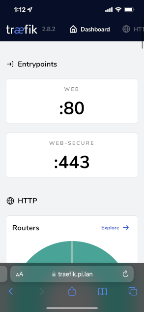
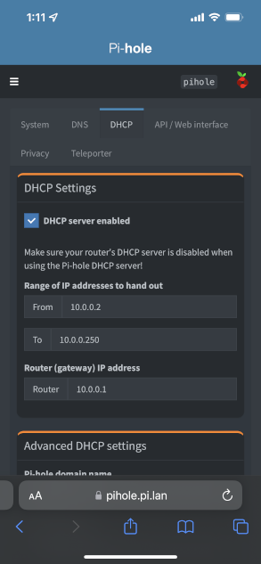
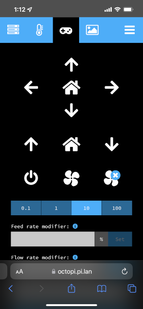

Create a SSL certificate for your home network
In this post I will explain how to create a SSL certificate for your home network and how to install the root cert onto your computers so your browsers trust it.
Why?
For me, the need came after I created a docker cluster on one of my Raspberry Pi’s with a reverse proxy and wanted to expose those services with local DNS using the pi.lan domain. I didn’t want to enable port forwarding and expose my services to the internet.
Generate the Root Key
openssl genrsa -des3 -out root.key 4096Enter a new password when prompted.
pi@rp-400:~ $ openssl genrsa -des3 -out root.key 4096
Generating RSA private key, 4096 bit long modulus (2 primes)
....................++++
..................++++
e is 65537 (0x010001)
Enter pass phrase for root.key:
Verifying - Enter pass phrase for root.key:
pi@rp-400:~ $ ls
root.keyroot.key has now been created.
Create Root Certificate
Adjust validity days to your liking. If you plan to access your websites with an iOS device, keep the days under 398. 1 year is a good go to.
openssl req -x509 -new -nodes -key root.key -sha256 -days 365 -out root.pemEnter your root key password when prompted. Then any other optional information. You can ENTER through each to skip.
pi@rp-400:~ $ openssl req -x509 -new -nodes -key root.key -sha256 -days 365 -out root.pem
Enter pass phrase for root.key:
You are about to be asked to enter information that will be incorporated
into your certificate request.
What you are about to enter is what is called a Distinguished Name or a DN.
There are quite a few fields but you can leave some blank
For some fields there will be a default value,
If you enter '.', the field will be left blank.
-----
Country Name (2 letter code) [AU]:
State or Province Name (full name) [Some-State]:
Locality Name (eg, city) []:
Organization Name (eg, company) [Internet Widgits Pty Ltd]:
Organizational Unit Name (eg, section) []:
Common Name (e.g. server FQDN or YOUR name) []:
Email Address []:
pi@rp-400:~ $ ls
root.key root.pemroot.pem has now been created.
Create CSR Configuration Files
Create a text file named v3.ext with the below contents. Add any domains to alt_names. In my case, I’ve added the wildcard for pi.lan (so the cert can be used with all subdomains), along with pi.lan it self.
authorityKeyIdentifier=keyid,issuer
basicConstraints=CA:FALSE
keyUsage = digitalSignature, nonRepudiation, keyEncipherment, dataEncipherment
subjectAltName = @alt_names
[alt_names]
DNS.1 = *.pi.lan
DNS.2 = pi.lanCreate a text file named sslcert.csr.cnf with the below contents. Update the properties in the dn section with your values.
[req]
default_bits = 4096
prompt = no
default_md = sha256
distinguished_name = dn
[dn]
C=US
ST=WA
L=Bellevue
O=Oswald Technologies
OU=Oswald Technologies
emailAddress=alex@oswaldtechnologies.com
CN = Oswald Technologies LAN Certpi@rp-400:~ $ ls
root.key root.pem sslcert.csr.cnf v3.extCreate Certificate-Signing Request or CSR
openssl req -new -sha256 -nodes -out sslcert.csr -newkey rsa:4096 -keyout sslcert.key -config sslcert.csr.cnfpi@rp-400:~ $ openssl req -new -sha256 -nodes -out sslcert.csr -newkey rsa:4096 -keyout sslcert.key -config sslcert.csr.cnf
Generating a RSA private key
..............................................................................................................++++
.........................................................................................++++
writing new private key to 'sslcert.key'
-----
pi@rp-400:~/cert_test $ ls
root.key root.pem sslcert.csr sslcert.csr.cnf sslcert.key v3.extsslcert.csr and sslcert.key have now been created.
Create the SSL Certificate
Create .crt. In my case, this is the certificate file used by Traefik.
openssl x509 -req -in sslcert.csr -CA root.pem -CAkey root.key -CAcreateserial -out sslcert.crt -days 365 -sha256 -extfile v3.extpi@rp-400:~ $ openssl x509 -req -in sslcert.csr -CA root.pem -CAkey root.key -CAcreateserial -out sslcert.crt -days 365 -sha256 -extfile v3.ext
Signature ok
subject=C = US, ST = WA, L = Bellevue, O = Oswald Technologies, OU = Oswald Technologies, emailAddress = alex@oswaldtechnologies.com, CN = Oswald Technologies LAN Cert
Getting CA Private Key
Enter pass phrase for root.key:
pi@rp-400:~ $ ls
root.key root.pem root.srl sslcert.crt sslcert.csr sslcert.csr.cnf sslcert.key v3.extsslcert.crt and root.srl have now been created.
Create PFX File
If needed, you can create a .pfx file from the certificate. In my case, this is the certificate file used by my .NET web applications to enable HTTPS.
openssl pkcs12 -export -out sslcert.pfx -inkey sslcert.key -in sslcert.crt -passout pass:pi@rp-400:~ $ openssl pkcs12 -export -out sslcert.pfx -inkey sslcert.key -in sslcert.crt -passout pass:
pi@rp-400:~ $ ls
root.key root.pem root.srl sslcert.crt sslcert.csr sslcert.csr.cnf sslcert.key sslcert.pfx v3.extTrusting the Certificates
Windows
Add the root CA to the Windows certificate store.
certutil -addstore -f "ROOT" root.pemOnce added, you will be able to see it in the Certificate Manager for Local Computer and Current User. It will be under Trusted Root Certification Authorities -> Certificates.

Linux
Create a folder for your cert in ca-certificates.
mkdir /usr/local/share/ca-certificates/<folder>Copy the pem file to this folder then update certificates.
sudo update-ca-certificatesYou will then need to manually trust the certificate in the browsers you use since the browsers use their own certificate store, and not the certficate store of the OS like in Windows.
iOS
Transfer the pem file to your phone.
Open the pem file in the Files app and choose to install on the iPhone (if you have a watch there will be an option to install on the watch as well).
Go to Settings > General > VPN & Device Management
Under Configuration Profile select the cert and click Install.

Go to Settings > General > About > Certificate Trust Settings and trust the certificate.
If you picked a validity period above 398 days, you will not see the cert in Certificate Trust Settings from my experience, and will not be able to trust it.

Conclusion
In this post I explained how to create your own root CA and create an SSL certificate from that. I explained how to install the certificate on Windows, Linux and iOS. With these instructions, you can use HTTPS for web services running locally through a reverse proxy. Here’s some iOS screenshots of some apps I’m doing this with.
 
 